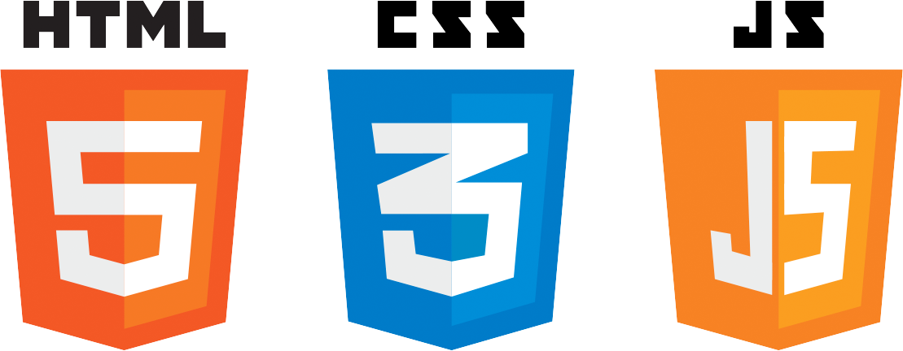

(71) 99174-5920
jacksonnascimento84@hotmail.com


Jackson Nascimento
Javascript Full Stack
(71) 99174-5920
jacksonnascimento84@hotmail.com

Graduação
Especialização em Segurança da Informação e Gestão de TI
Universidade Salvador (UNIFACS)
2º semestre – Previsão de conclusão: 2022
Graduação em Ciência da Computação
Centro Universitário UniRuy | Wyden
Conclusão: Junho de 2020